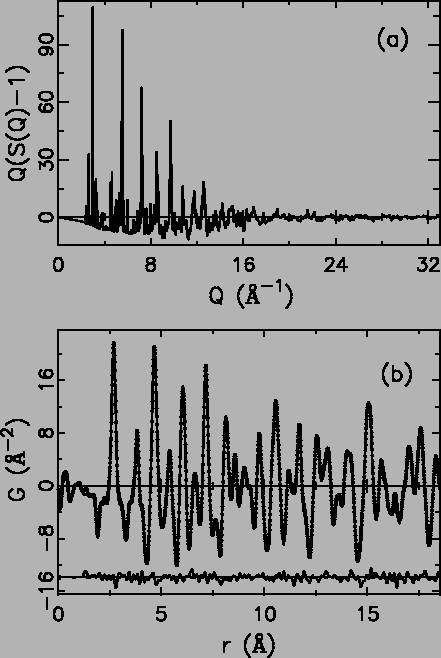

Finely powdered samples of La2-2xSr1+2xMn2O7 (x = 0.54, 0.60, 0.64, 0.66, 0.68, 0.70, 0.72, 0.76, 0.78, 0.80) were synthesized at Argonne National Laboratory (ANL). The synthesis method is described elsewhere [163]. All samples were characterized using X-ray diffraction and susceptibility measurements. The oxygen content was verified by measuring the c -axis parameter and was found to fall on the expected curve for stoichiometric samples.
Neutron powder diffraction measurements were carried out on the Special Environment Powder Diffractometer (SEPD) at the Intense Pulsed Neutron Source (IPNS) at ANL. The samples of about 7.0 g were sealed in cylindrical vanadium cans with helium exchange gas. Data were collected at 4 K for all the compounds using a closed cycle helium refrigerator. The x = 0.64 and x = 0.68 samples were measured four months after the others. Standard corrections were made to the raw data to account for experimental effects such as detector dead time and efficiency, background, sample absorption, multiple scattering to obtain the normalized total scattering structure function, S(Q), where Q is the magnitude of the scattering vector. These procedures are described in detail elsewhere [5]. All corrections were carried out using the program PDFgetN [42]. The PDF, G(r), is obtained by a Fourier transformation according to G(r). The PDF gives the probability of finding an atom at a distance r away from another atom. An example of the PDF from La2-2xSr1+2xMn2O7 (x = 0.80) at 4 K is shown in Fig. 4.11(b)
|
 |
Peaks in G(r) represent the probability of finding pairs of atoms separated by the distance-r, weighted by the product of the corresponding atom pair's scattering lengths. In a perfect crystalline La2-2xSr1+2xMn2O7 structure, the nearest neighbor distance comes from the 6 equidistant Mn-O bond lengths in one MnO6 octahedron, corresponding to the first peak in PDF at about 1.94 Å. This is negative due to Mn atom's negative neutron scattering length. Peaks at higher-r generally contain contributions from more than one unresolved pair. The peak at 2.72 Å is dominated by high multiplicity O-O correlations, though it also contains a contribution from La/Sr-O correlations. The decomposition of multiple contributions is handled by a real space Rietveld refinement program: PDFFIT [11] with which a structural model can be obtained without the constraints posed by space group symmetries. Therefore, both local structural and average structure analysis can be performed on the same data set.